pbmc3k data in fasttopic package, result
DongyueXie
2023-02-16
Last updated: 2023-02-19
Checks: 7 0
Knit directory: gsmash/
This reproducible R Markdown analysis was created with workflowr (version 1.7.0). The Checks tab describes the reproducibility checks that were applied when the results were created. The Past versions tab lists the development history.
Great! Since the R Markdown file has been committed to the Git repository, you know the exact version of the code that produced these results.
Great job! The global environment was empty. Objects defined in the global environment can affect the analysis in your R Markdown file in unknown ways. For reproduciblity it’s best to always run the code in an empty environment.
The command set.seed(20220606) was run prior to running
the code in the R Markdown file. Setting a seed ensures that any results
that rely on randomness, e.g. subsampling or permutations, are
reproducible.
Great job! Recording the operating system, R version, and package versions is critical for reproducibility.
Nice! There were no cached chunks for this analysis, so you can be confident that you successfully produced the results during this run.
Great job! Using relative paths to the files within your workflowr project makes it easier to run your code on other machines.
Great! You are using Git for version control. Tracking code development and connecting the code version to the results is critical for reproducibility.
The results in this page were generated with repository version 0c85a75. See the Past versions tab to see a history of the changes made to the R Markdown and HTML files.
Note that you need to be careful to ensure that all relevant files for
the analysis have been committed to Git prior to generating the results
(you can use wflow_publish or
wflow_git_commit). workflowr only checks the R Markdown
file, but you know if there are other scripts or data files that it
depends on. Below is the status of the Git repository when the results
were generated:
Ignored files:
Ignored: .Rhistory
Ignored: .Rproj.user/
Untracked files:
Untracked: analysis/movielens.Rmd
Untracked: analysis/profiled_obj_for_b_splitting.Rmd
Untracked: code/misc_test.R
Untracked: code/poisson_mean/pois_log_normal_mle.R
Untracked: data/ml-latest-small/
Untracked: data/pbmc3k_10x/
Untracked: output/droplet_iteration_results/
Untracked: output/pbmc3k_10x/
Untracked: output/pbmc3k_iteration_results/
Untracked: output/pbmc_fasttopics/
Note that any generated files, e.g. HTML, png, CSS, etc., are not included in this status report because it is ok for generated content to have uncommitted changes.
These are the previous versions of the repository in which changes were
made to the R Markdown
(analysis/pbmc3k_infasttopic_result.Rmd) and HTML
(docs/pbmc3k_infasttopic_result.html) files. If you’ve
configured a remote Git repository (see ?wflow_git_remote),
click on the hyperlinks in the table below to view the files as they
were in that past version.
| File | Version | Author | Date | Message |
|---|---|---|---|---|
| Rmd | 0c85a75 | DongyueXie | 2023-02-19 | wflow_publish("analysis/index.Rmd") |
| html | 59cf7e4 | DongyueXie | 2023-02-16 | Build site. |
| Rmd | d9f1f5c | DongyueXie | 2023-02-16 | wflow_publish("analysis/pbmc3k_infasttopic_result.Rmd") |
Introduction
This pbmc3k data is from fastTopics package, and is described as “These data are a selection of the reference transcriptome profiles generated via single-cell RNA sequencing (RNA-seq) of 10 bead-enriched subpopulations of PBMCs (Donor A), described in Zheng et al (2017).”
Filter out genes
I filtered out genes that expressed in less than 10 cells, and no further preprocessing. The final data matrix is
library(fastTopics)
library(stm)
library(Matrix)
data(pbmc_facs)
## original data fit
counts = pbmc_facs$counts
counts_filtered = counts[,colSums(counts!=0)>10]
dim(counts_filtered)[1] 3774 11487pbmc3k_sparse = ebpmf_log(counts_filtered,flash_control = list())
saveRDS(pbmc3k_sparse,'output/pbmc_fasttopics/pbmc3k_sparse.rds')
pbmc3k_nonnegL = ebpmf_log(counts_filtered,flash_control = list(ebnm.fn=c(ebnm::ebnm_point_exponential,ebnm::ebnm_point_normal),loadings_sign = 1))
saveRDS(pbmc3k_nonnegL,'output/pbmc_fasttopics/pbmc3k_nonnegL_pe.rds')
pbmc3k_nonnegLF = ebpmf_log(counts_filtered,flash_control = list(ebnm.fn=c(ebnm::ebnm_point_exponential,ebnm::ebnm_point_exponential),factors_sign=1,loadings_sign = 1))
saveRDS(pbmc3k_nonnegLF,'output/pbmc_fasttopics/pbmc3k_nonnegLF_pe.rds')
pbmc3k_nonnegL = ebpmf_log(counts_filtered,flash_control = list(ebnm.fn=c(ebnm::ebnm_unimodal_nonnegative,ebnm::ebnm_point_normal),loadings_sign = 1))
saveRDS(pbmc3k_nonnegL,'output/pbmc_fasttopics/pbmc3k_nonnegL_un.rds')
pbmc3k_nonnegLF = ebpmf_log(counts_filtered,flash_control = list(ebnm.fn=c(ebnm::ebnm_unimodal_nonnegative,ebnm::ebnm_unimodal_nonnegative),factors_sign=1,loadings_sign = 1))
saveRDS(pbmc3k_nonnegLF,'output/pbmc_fasttopics/pbmc3k_nonnegLF_un.rds')Model fitting
The model is the Empirical Bayes Poisson matrix factorization model,
and \(l_0\) is fixed at
log(rowMeans(Y)), \(f_0\)
is initialized at log(colSums(Y)/sum(l_0)), then let the
model estimates \(f_0\) during
iterations.
summary_plot = function(res){
plot(res$K_trace,ylab='',xlab='iterations',main='K over iterations',pch=20)
plot(res$sigma2,ylab='',xlab='gene',main = 'gene specific variance',pch=20,col='grey70')
plot(colSums(counts_filtered/rowSums(counts_filtered)),res$sigma2,xlab='gene expression',ylab='gene specific variance',pch=20,col='grey60')
plot(colSums(counts_filtered==0)/nrow(counts_filtered),res$sigma2,xlab='gene expression sparsity',ylab='gene specific variance',pch = 20, col='grey50')
}Sparse loadings and factors
source('code/poisson_STM/plot_factors.R')
pbmc3k_sparse = readRDS('output/pbmc_fasttopics/pbmc3k_sparse.rds')summary_plot(pbmc3k_sparse)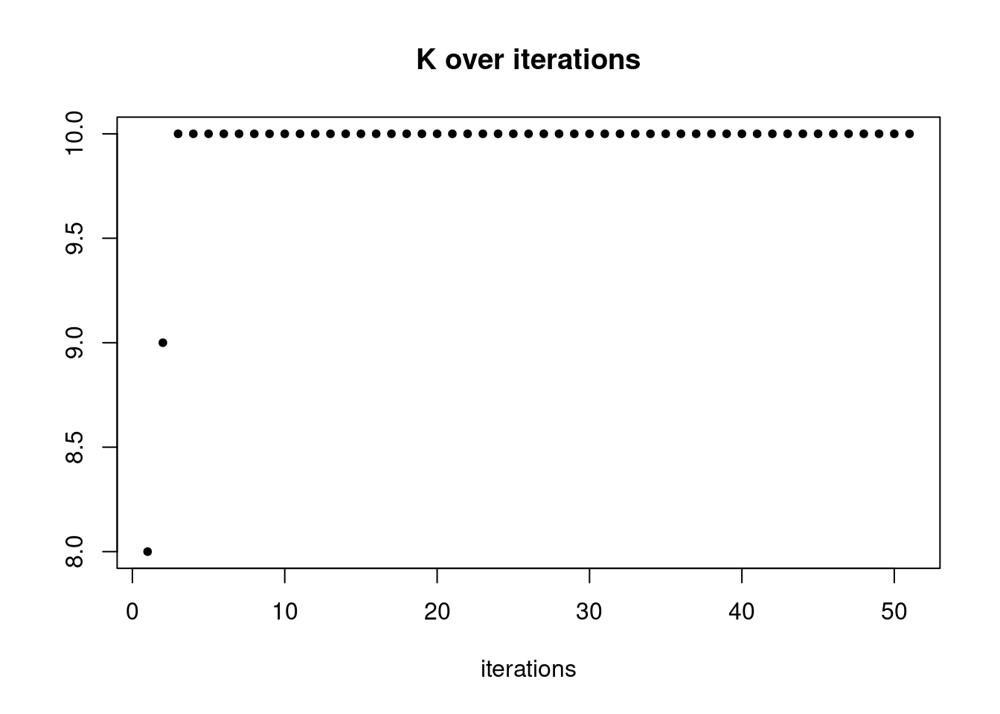
| Version | Author | Date |
|---|---|---|
| 59cf7e4 | DongyueXie | 2023-02-16 |
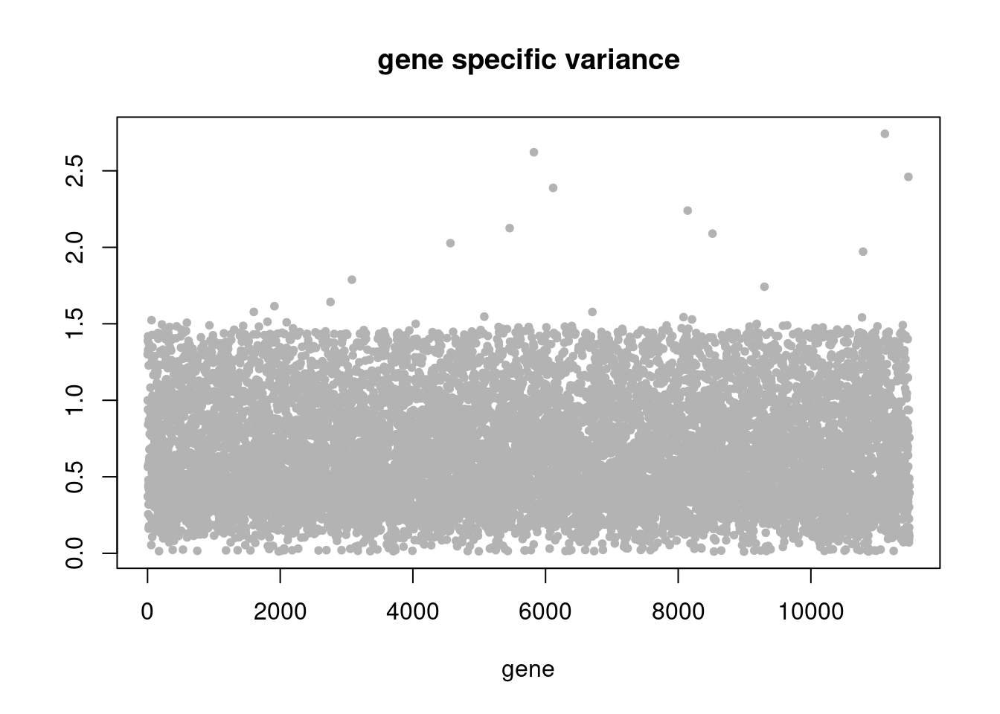
| Version | Author | Date |
|---|---|---|
| 59cf7e4 | DongyueXie | 2023-02-16 |
| Version | Author | Date |
|---|---|---|
| 59cf7e4 | DongyueXie | 2023-02-16 |
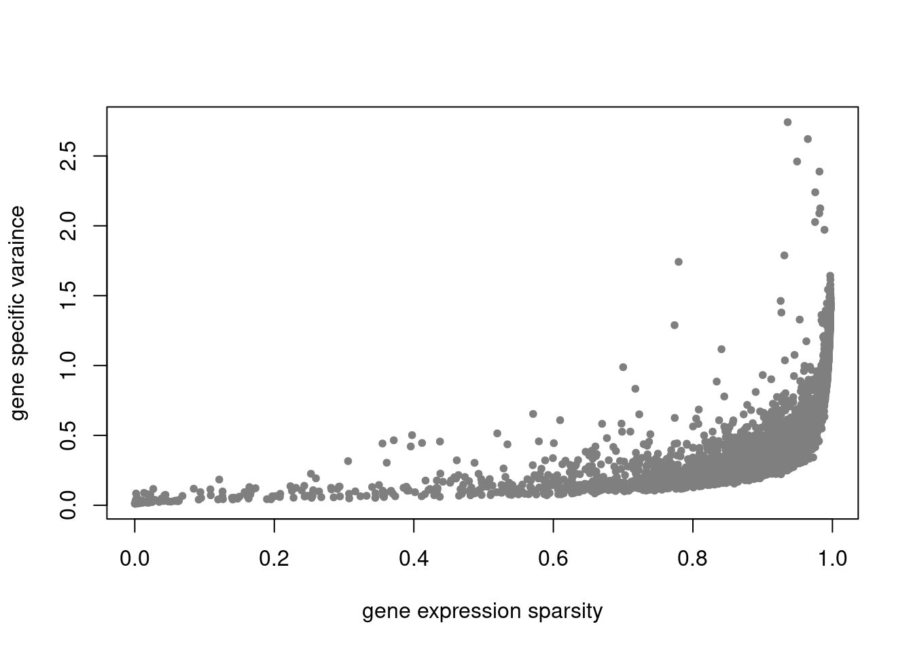
| Version | Author | Date |
|---|---|---|
| 59cf7e4 | DongyueXie | 2023-02-16 |
plot.factors(pbmc3k_sparse$fit_flash,pbmc_facs$samples$subpop)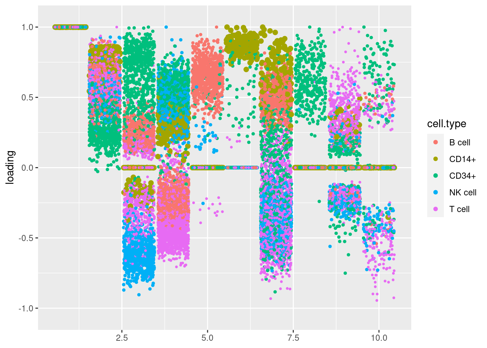
| Version | Author | Date |
|---|---|---|
| 59cf7e4 | DongyueXie | 2023-02-16 |
f0_init = log(colSums(counts_filtered)/sum(rowMeans(counts_filtered)))
plot(pbmc3k_sparse$fit_flash$F.pm[,2],f0_init,xlab='f0 estimates',ylab='f0 init values',pch=20,col='grey70')
abline(a=0,b=1)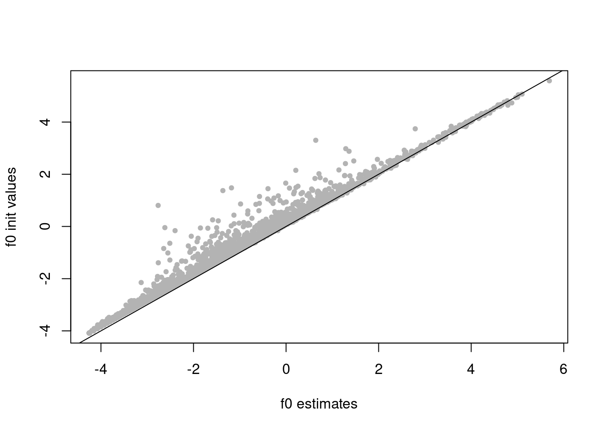
| Version | Author | Date |
|---|---|---|
| 59cf7e4 | DongyueXie | 2023-02-16 |
Nonnegative loadings with point exponential prior, and sparse factors
source('code/poisson_STM/structure_plot.R')
pbmc3k_nonnegL_pe = readRDS('output/pbmc_fasttopics/pbmc3k_nonnegL_pe.rds')summary_plot(pbmc3k_nonnegL_pe)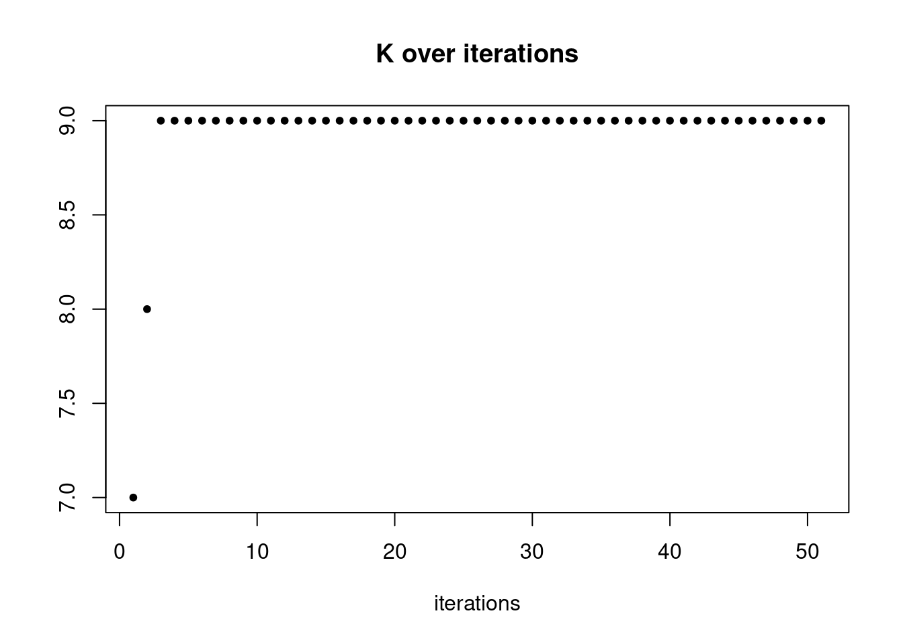
| Version | Author | Date |
|---|---|---|
| 59cf7e4 | DongyueXie | 2023-02-16 |
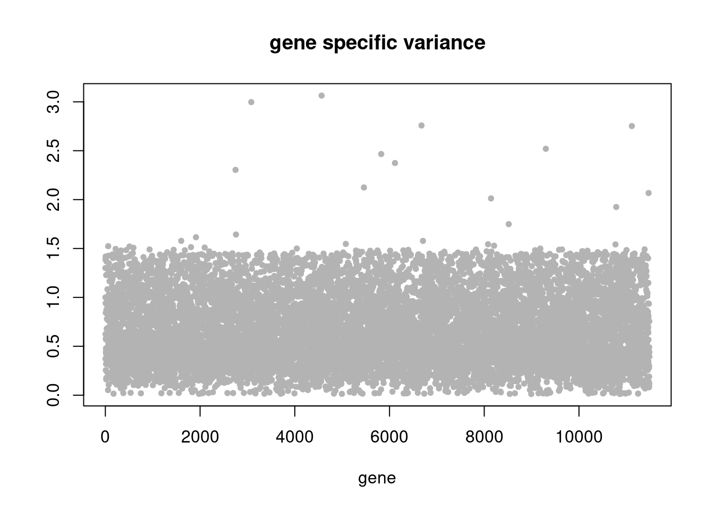
| Version | Author | Date |
|---|---|---|
| 59cf7e4 | DongyueXie | 2023-02-16 |
| Version | Author | Date |
|---|---|---|
| 59cf7e4 | DongyueXie | 2023-02-16 |
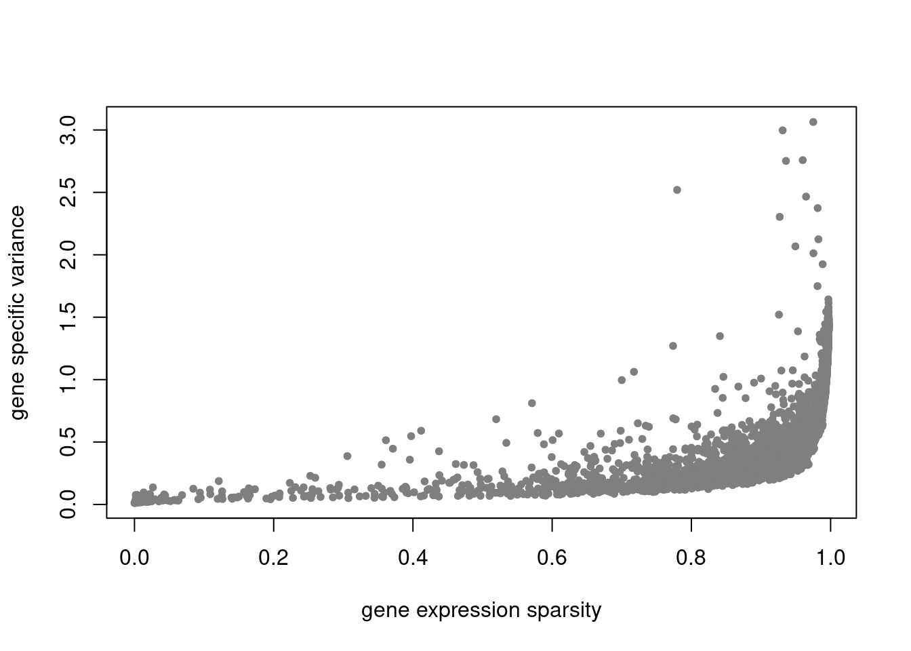
| Version | Author | Date |
|---|---|---|
| 59cf7e4 | DongyueXie | 2023-02-16 |
plot(pbmc3k_nonnegL_pe$fit_flash$F.pm[,2],f0_init,xlab='f0 estimates',ylab='f0 init value',pch=20,col='grey70')
abline(a=0,b=1)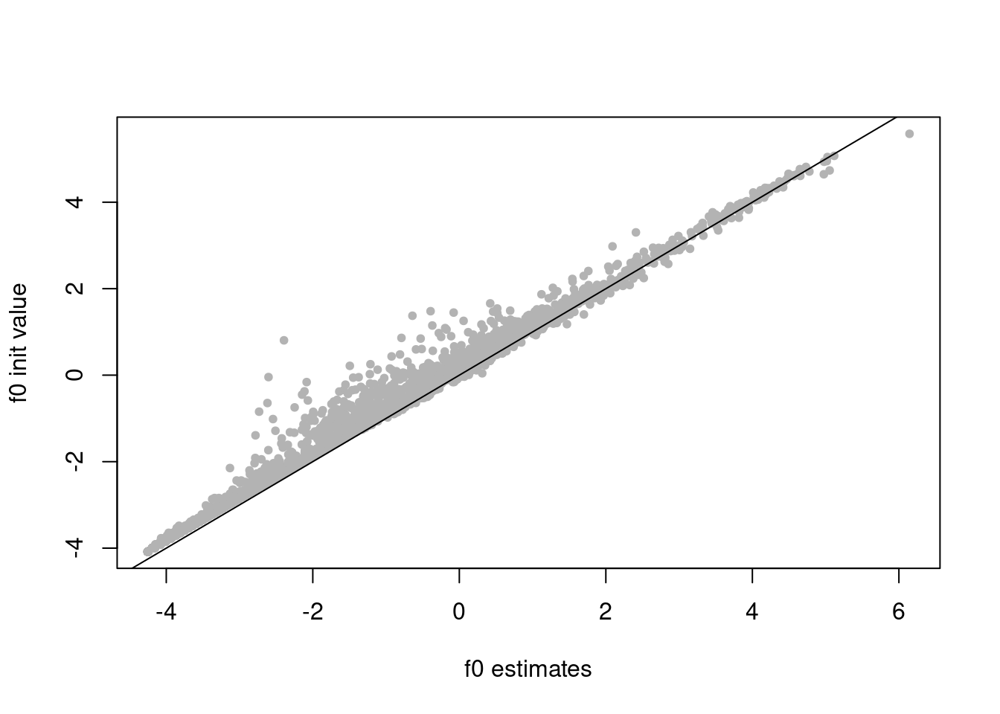
| Version | Author | Date |
|---|---|---|
| 59cf7e4 | DongyueXie | 2023-02-16 |
plot.factors(pbmc3k_nonnegL_pe$fit_flash,pbmc_facs$samples$subpop,nonnegative = T)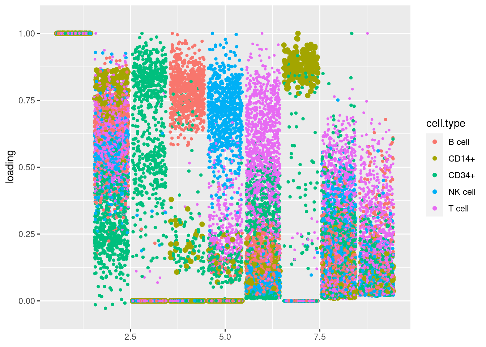
| Version | Author | Date |
|---|---|---|
| 59cf7e4 | DongyueXie | 2023-02-16 |
structure_plot_general(pbmc3k_nonnegL_pe$fit_flash$L.pm,pbmc3k_nonnegL_pe$fit_flash$F.pm,pbmc_facs$samples$subpop,LD=T)Running tsne on 417 x 7 matrix.Running tsne on 91 x 7 matrix.Running tsne on 358 x 7 matrix.Running tsne on 359 x 7 matrix.Running tsne on 775 x 7 matrix.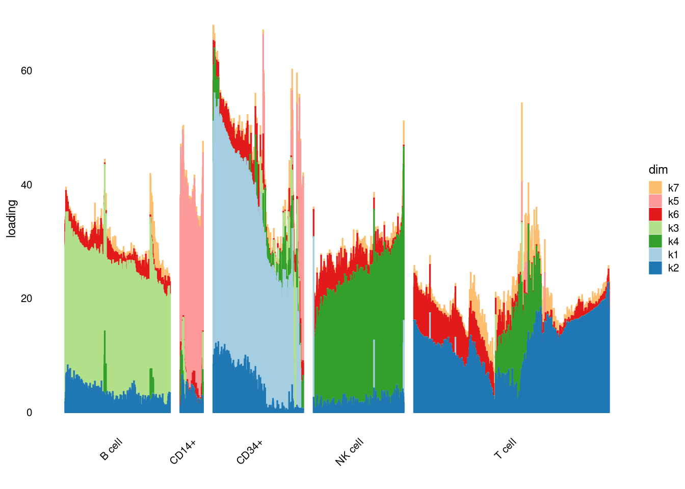
| Version | Author | Date |
|---|---|---|
| 59cf7e4 | DongyueXie | 2023-02-16 |
Nonnegative loadings with unimodal nonnegative prior, and sparse factors
pbmc3k_nonnegL_un = readRDS('output/pbmc_fasttopics/pbmc3k_nonnegL_un.rds')summary_plot(pbmc3k_nonnegL_un)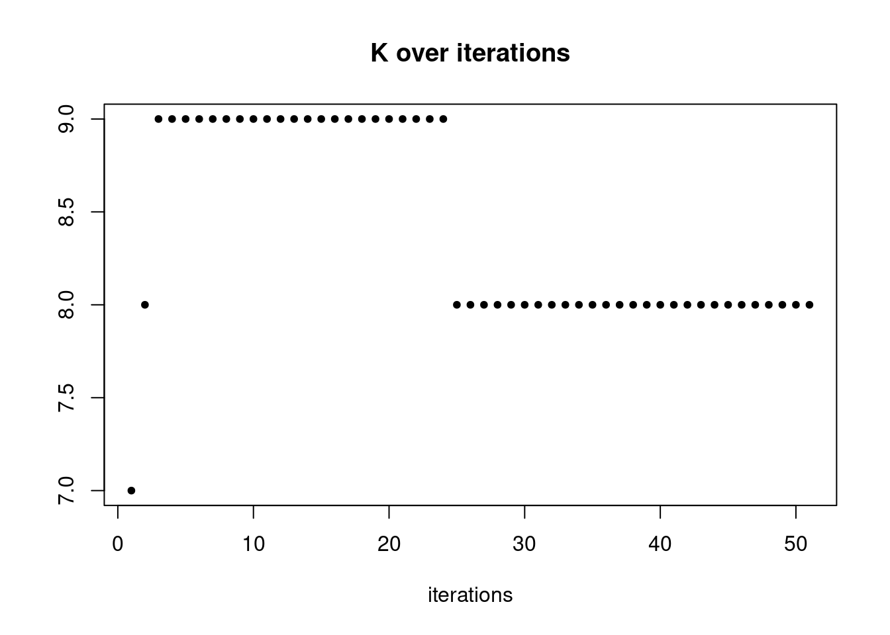
| Version | Author | Date |
|---|---|---|
| 59cf7e4 | DongyueXie | 2023-02-16 |
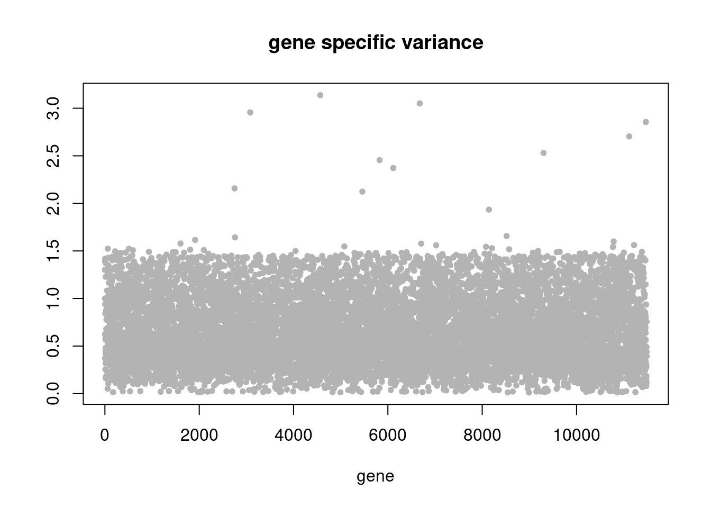
| Version | Author | Date |
|---|---|---|
| 59cf7e4 | DongyueXie | 2023-02-16 |
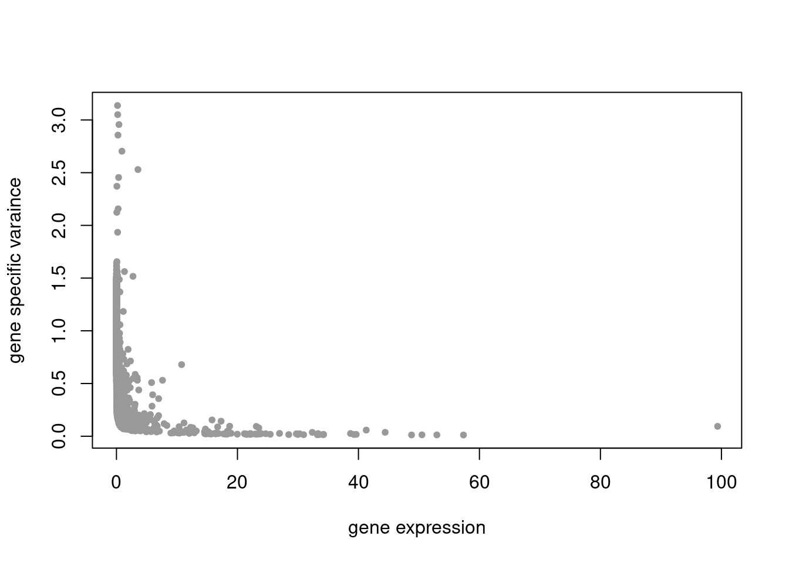
| Version | Author | Date |
|---|---|---|
| 59cf7e4 | DongyueXie | 2023-02-16 |
| Version | Author | Date |
|---|---|---|
| 59cf7e4 | DongyueXie | 2023-02-16 |
plot(pbmc3k_nonnegL_un$fit_flash$F.pm[,2],f0_init,xlab='f0 estimates',ylab='f0 init value',pch=20,col='grey70')
abline(a=0,b=1)
| Version | Author | Date |
|---|---|---|
| 59cf7e4 | DongyueXie | 2023-02-16 |
plot.factors(pbmc3k_nonnegL_un$fit_flash,pbmc_facs$samples$subpop,nonnegative = T)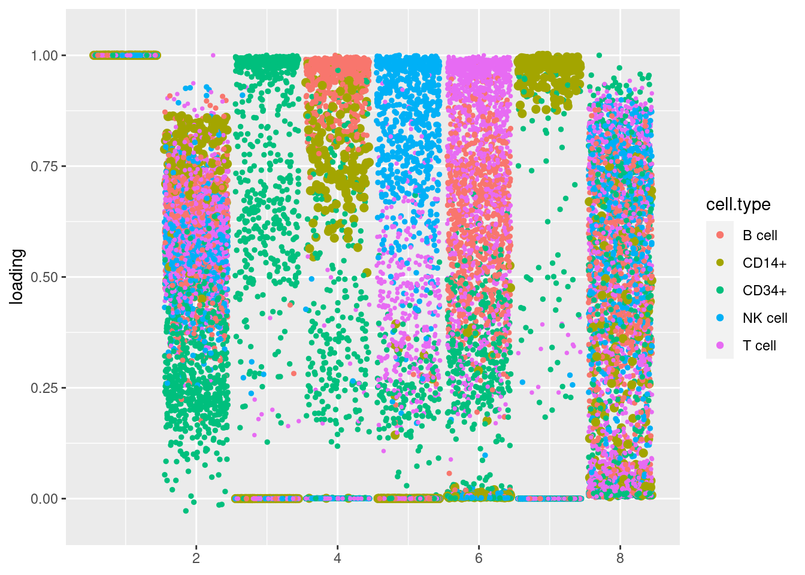
| Version | Author | Date |
|---|---|---|
| 59cf7e4 | DongyueXie | 2023-02-16 |
structure_plot_general(pbmc3k_nonnegL_un$fit_flash$L.pm,pbmc3k_nonnegL_un$fit_flash$F.pm,pbmc_facs$samples$subpop,LD=T)Running tsne on 417 x 6 matrix.Running tsne on 91 x 6 matrix.Running tsne on 358 x 6 matrix.Running tsne on 359 x 6 matrix.Running tsne on 775 x 6 matrix.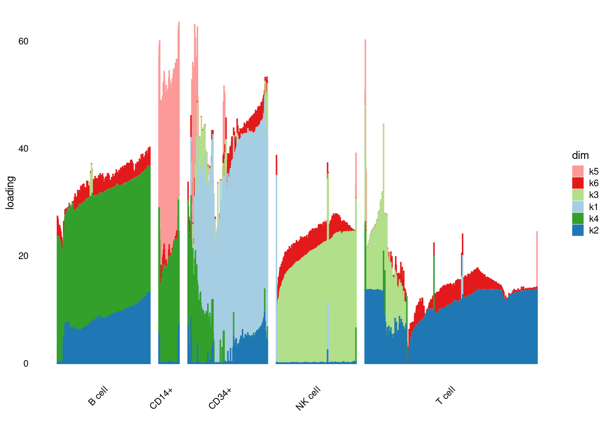
| Version | Author | Date |
|---|---|---|
| 59cf7e4 | DongyueXie | 2023-02-16 |
Nonnegative loadings and factors with point exponential prior
pbmc3k_nonnegLF_pe = readRDS('output/pbmc_fasttopics/pbmc3k_nonnegLF_pe.rds')summary_plot(pbmc3k_nonnegLF_pe)
| Version | Author | Date |
|---|---|---|
| 59cf7e4 | DongyueXie | 2023-02-16 |
| Version | Author | Date |
|---|---|---|
| 59cf7e4 | DongyueXie | 2023-02-16 |
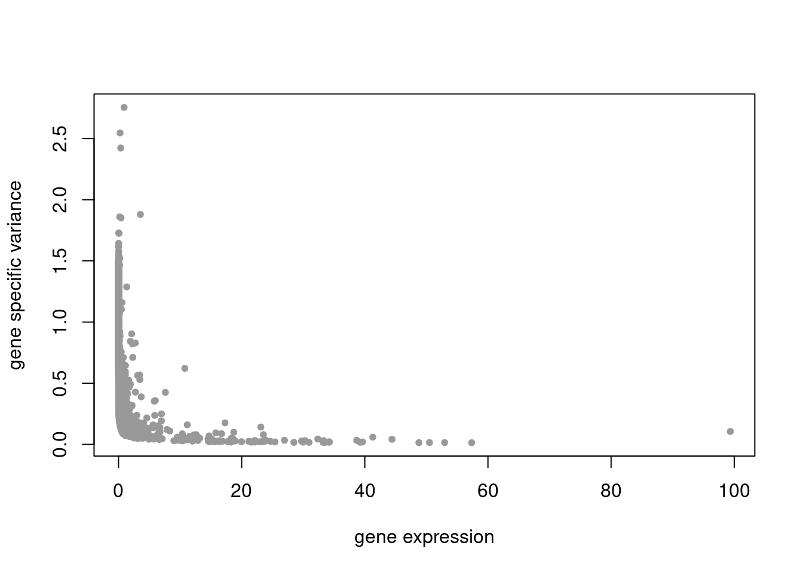
| Version | Author | Date |
|---|---|---|
| 59cf7e4 | DongyueXie | 2023-02-16 |
| Version | Author | Date |
|---|---|---|
| 59cf7e4 | DongyueXie | 2023-02-16 |
plot(pbmc3k_nonnegLF_pe$fit_flash$F.pm[,2],f0_init,xlab='f0 estimates',ylab='f0 init value',pch=20,col='grey70')
abline(a=0,b=1)
| Version | Author | Date |
|---|---|---|
| 59cf7e4 | DongyueXie | 2023-02-16 |
plot.factors(pbmc3k_nonnegLF_pe$fit_flash,pbmc_facs$samples$subpop,nonnegative = T)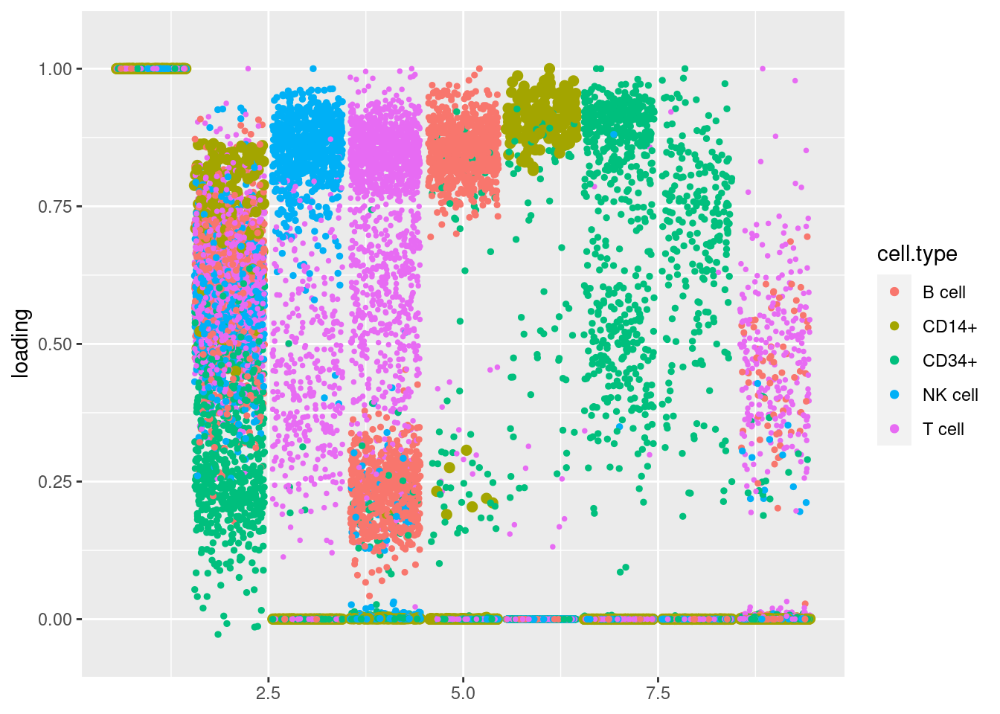
| Version | Author | Date |
|---|---|---|
| 59cf7e4 | DongyueXie | 2023-02-16 |
structure_plot_general(pbmc3k_nonnegLF_pe$fit_flash$L.pm,pbmc3k_nonnegLF_pe$fit_flash$F.pm,pbmc_facs$samples$subpop,LD=T)Running tsne on 417 x 7 matrix.Running tsne on 91 x 7 matrix.Running tsne on 358 x 7 matrix.Running tsne on 359 x 7 matrix.Running tsne on 775 x 7 matrix.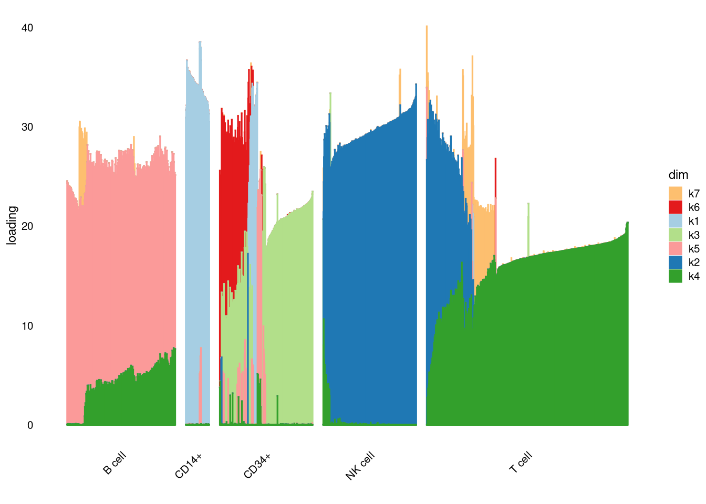
| Version | Author | Date |
|---|---|---|
| 59cf7e4 | DongyueXie | 2023-02-16 |
Nonnegative loadings and factors with unimodal nonnegative prior
pbmc3k_nonnegLF_un = readRDS('output/pbmc_fasttopics/pbmc3k_nonnegLF_un.rds')summary_plot(pbmc3k_nonnegLF_un)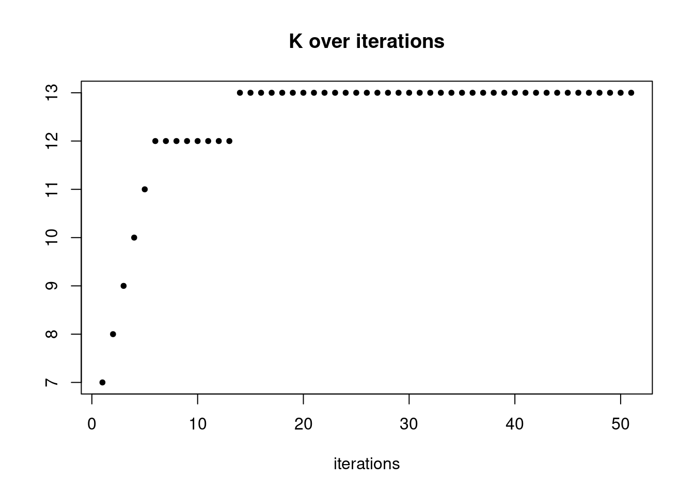
| Version | Author | Date |
|---|---|---|
| 59cf7e4 | DongyueXie | 2023-02-16 |
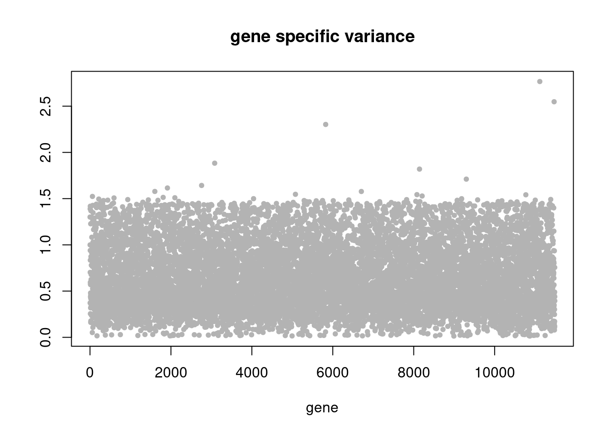
| Version | Author | Date |
|---|---|---|
| 59cf7e4 | DongyueXie | 2023-02-16 |
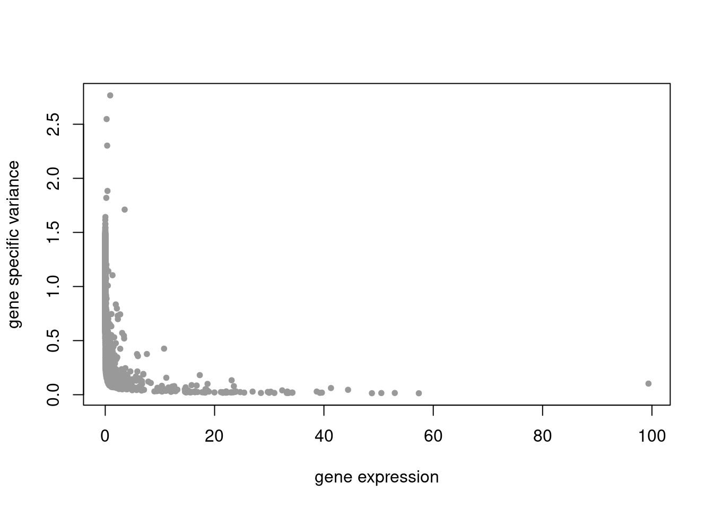
| Version | Author | Date |
|---|---|---|
| 59cf7e4 | DongyueXie | 2023-02-16 |
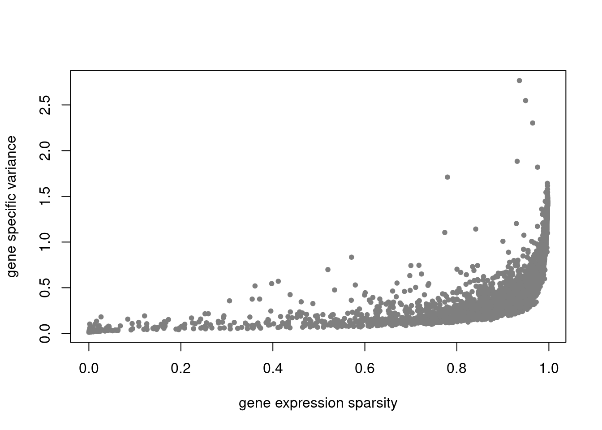
| Version | Author | Date |
|---|---|---|
| 59cf7e4 | DongyueXie | 2023-02-16 |
plot(pbmc3k_nonnegLF_un$fit_flash$F.pm[,2],f0_init,xlab='f0 estimates',ylab='f0 init value',pch=20,col='grey70')
abline(a=0,b=1)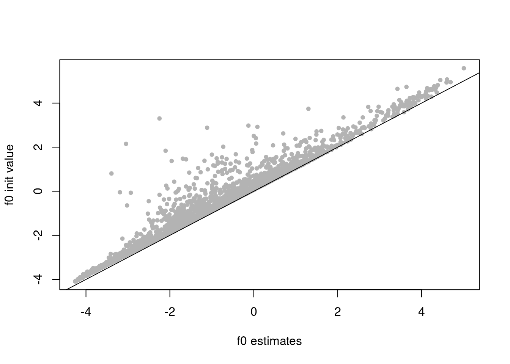
| Version | Author | Date |
|---|---|---|
| 59cf7e4 | DongyueXie | 2023-02-16 |
plot.factors(pbmc3k_nonnegLF_un$fit_flash,pbmc_facs$samples$subpop,nonnegative = T)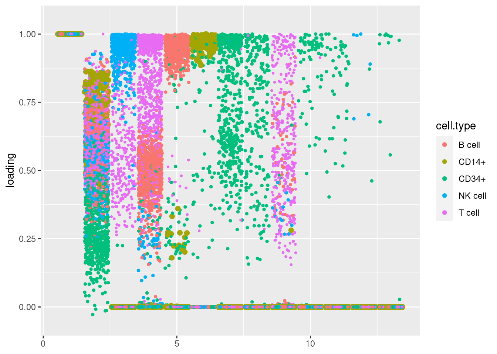
| Version | Author | Date |
|---|---|---|
| 59cf7e4 | DongyueXie | 2023-02-16 |
structure_plot_general(pbmc3k_nonnegLF_un$fit_flash$L.pm,pbmc3k_nonnegLF_un$fit_flash$F.pm,pbmc_facs$samples$subpop,LD=T)Running tsne on 417 x 11 matrix.Running tsne on 91 x 11 matrix.Running tsne on 358 x 11 matrix.Running tsne on 359 x 11 matrix.Running tsne on 775 x 11 matrix.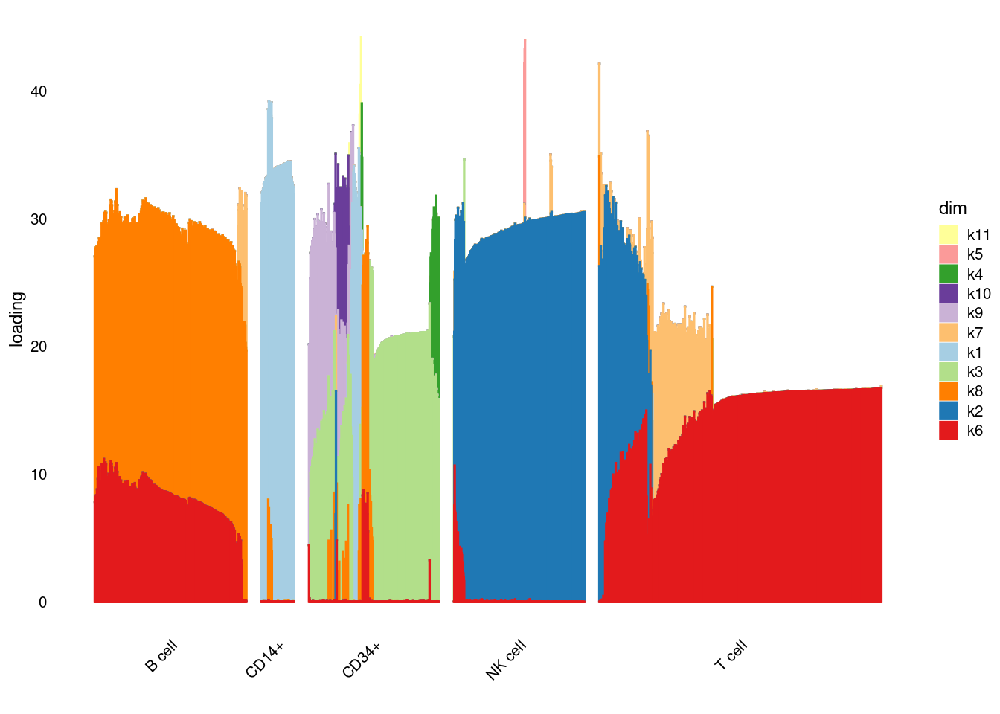
| Version | Author | Date |
|---|---|---|
| 59cf7e4 | DongyueXie | 2023-02-16 |
sessionInfo()R version 4.2.2 Patched (2022-11-10 r83330)
Platform: x86_64-pc-linux-gnu (64-bit)
Running under: Ubuntu 22.04.1 LTS
Matrix products: default
BLAS: /usr/lib/x86_64-linux-gnu/openblas-pthread/libblas.so.3
LAPACK: /usr/lib/x86_64-linux-gnu/openblas-pthread/libopenblasp-r0.3.20.so
locale:
[1] LC_CTYPE=en_US.UTF-8 LC_NUMERIC=C
[3] LC_TIME=en_US.UTF-8 LC_COLLATE=en_US.UTF-8
[5] LC_MONETARY=en_US.UTF-8 LC_MESSAGES=en_US.UTF-8
[7] LC_PAPER=en_US.UTF-8 LC_NAME=C
[9] LC_ADDRESS=C LC_TELEPHONE=C
[11] LC_MEASUREMENT=en_US.UTF-8 LC_IDENTIFICATION=C
attached base packages:
[1] stats graphics grDevices utils datasets methods base
other attached packages:
[1] ggplot2_3.4.0 Matrix_1.5-3 stm_2.0.5 fastTopics_0.6-142
[5] workflowr_1.7.0
loaded via a namespace (and not attached):
[1] Rtsne_0.16 ebpm_0.0.1.3 colorspace_2.0-3
[4] smashr_1.3-6 ellipsis_0.3.2 mr.ash_0.1-87
[7] rprojroot_2.0.3 fs_1.5.2 rstudioapi_0.14
[10] farver_2.1.1 MatrixModels_0.5-1 ggrepel_0.9.2
[13] fansi_1.0.3 codetools_0.2-19 splines_4.2.2
[16] cachem_1.0.6 knitr_1.41 jsonlite_1.8.4
[19] nloptr_2.0.3 mcmc_0.9-7 ashr_2.2-54
[22] smashrgen_1.1.6 uwot_0.1.14 compiler_4.2.2
[25] httr_1.4.4 RcppZiggurat_0.1.6 fastmap_1.1.0
[28] lazyeval_0.2.2 cli_3.4.1 later_1.3.0
[31] htmltools_0.5.4 quantreg_5.94 prettyunits_1.1.1
[34] tools_4.2.2 coda_0.19-4 gtable_0.3.1
[37] glue_1.6.2 reshape2_1.4.4 dplyr_1.0.10
[40] Rcpp_1.0.9 softImpute_1.4-1 jquerylib_0.1.4
[43] vctrs_0.5.1 iterators_1.0.14 wavethresh_4.7.2
[46] xfun_0.35 stringr_1.5.0 ps_1.7.2
[49] trust_0.1-8 lifecycle_1.0.3 irlba_2.3.5.1
[52] NNLM_0.4.4 getPass_0.2-2 MASS_7.3-58.2
[55] scales_1.2.1 hms_1.1.2 promises_1.2.0.1
[58] parallel_4.2.2 SparseM_1.81 yaml_2.3.6
[61] pbapply_1.6-0 sass_0.4.4 stringi_1.7.8
[64] SQUAREM_2021.1 highr_0.9 deconvolveR_1.2-1
[67] foreach_1.5.2 caTools_1.18.2 shape_1.4.6
[70] truncnorm_1.0-8 horseshoe_0.2.0 rlang_1.0.6
[73] pkgconfig_2.0.3 matrixStats_0.63.0 bitops_1.0-7
[76] ebnm_1.0-12 evaluate_0.19 lattice_0.20-45
[79] invgamma_1.1 purrr_0.3.5 labeling_0.4.2
[82] htmlwidgets_1.6.0 Rfast_2.0.6 cowplot_1.1.1
[85] processx_3.8.0 tidyselect_1.2.0 plyr_1.8.8
[88] magrittr_2.0.3 R6_2.5.1 generics_0.1.3
[91] withr_2.5.0 pillar_1.8.1 whisker_0.4.1
[94] survival_3.5-0 mixsqp_0.3-48 tibble_3.1.8
[97] crayon_1.5.2 utf8_1.2.2 plotly_4.10.1
[100] rmarkdown_2.19 progress_1.2.2 grid_4.2.2
[103] data.table_1.14.6 callr_3.7.3 git2r_0.30.1
[106] digest_0.6.31 vebpm_0.4.3 tidyr_1.2.1
[109] httpuv_1.6.7 MCMCpack_1.6-3 RcppParallel_5.1.5
[112] munsell_0.5.0 glmnet_4.1-6 viridisLite_0.4.1
[115] flashier_0.2.34 bslib_0.4.2 quadprog_1.5-8